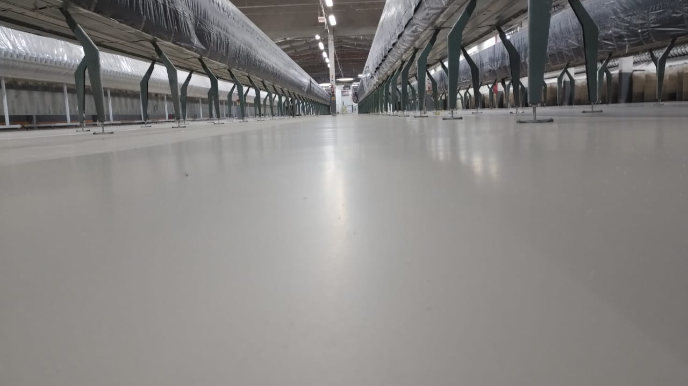

Piso PU (Piso Uretano Argamassado)

Epoxi Multilayer

Epoxi Auto Nivelante

Tratamento de junta P.U

Na TECMASTER, oferecemos soluções completas em pisos industriais que aliam resistência, durabilidade e acabamento impecável.
Conheça cada serviço em detalhes e encontre a melhor opção para o seu projeto.
Excelente resistência a produtos químicos e variações térmicas. Ideal para indústrias alimentícias e farmacêuticas.


Aplicação de endurecedores para aumentar a resistência e durabilidade do piso.


Correções de trincas, desgastes e irregularidades, deixando o piso como novo.


Ideal para áreas industriais e comerciais. Alta resistência e ótimo custo-benefício.


O lábio polimérico é um reforço de borda utilizado em locais com alta solicitação mecânica, como estacionamentos, pontes, viadutos e pisos industriais. É utilizado para tratar e reforçar as bordas das juntas dos pisos de concreto.